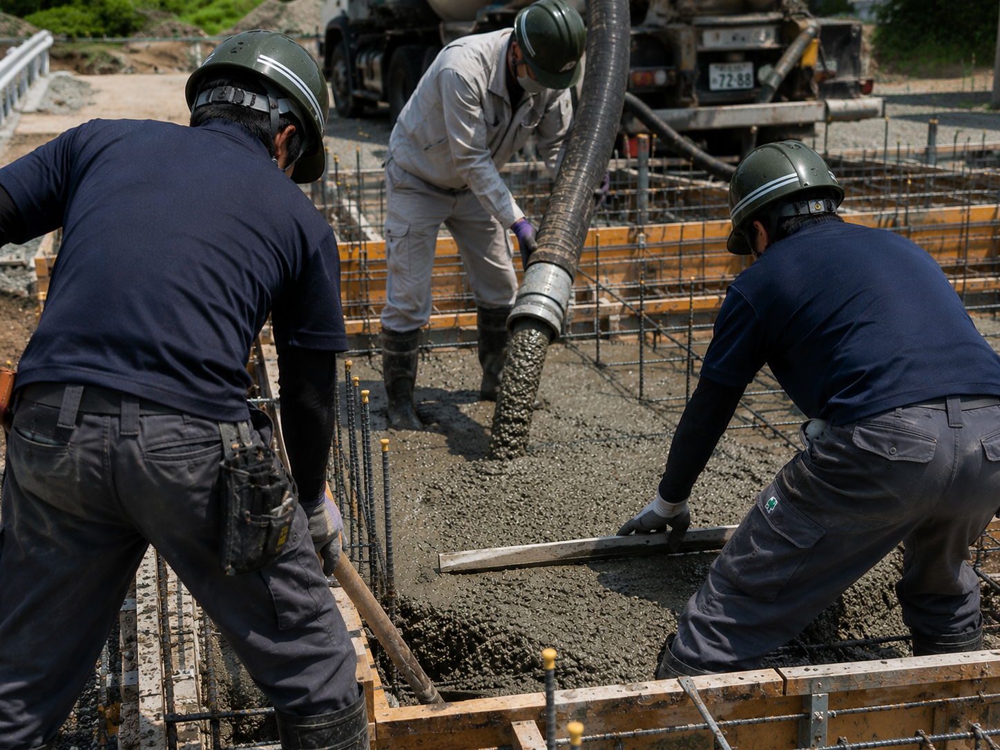
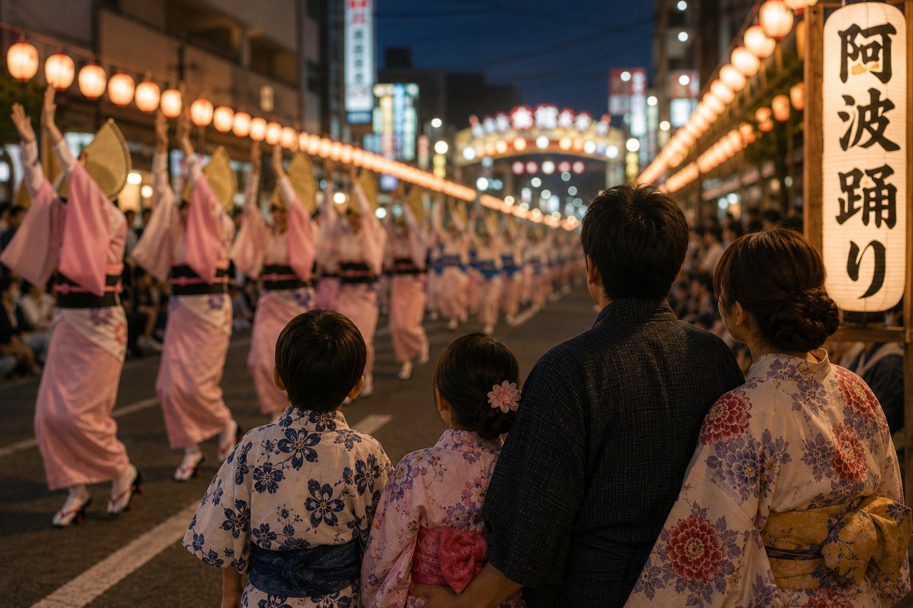

Recruit
誠実な仕事は、
誠実な人から生まれる
社員一人ひとりが安心して働き、
誇りを持ち続けられる会社へ。
徳島で一番働きやすい職場を、
本気で目指しています。
OUR PROMISE
01安心して働ける環境を
約束します。
Evidence
私たちの取り組み
- 休憩所完備
- 空調服・熱中症対策
- 安全教育
- 定期的な職場環境の見直し
Together
あなたと一緒に目指したいこと
もっとこうした方が働きやすい。
そんな意見やアイデアがあれば、ぜひ聞かせてください。社員一人ひとりの声を大切にしながら、一緒により良い職場をつくっていきたいと考えています。
OUR PROMISE
02成長を支え続けることを
約束します。
Evidence
私たちの取り組み
- 資格取得支援
- 資格取得手当
- 先輩社員によるサポート
Together
あなたと一緒に目指したいこと
失敗を恐れず、挑戦してください。
分からないことはそのままにせず、遠慮なく相談してください。成長したいという気持ちを、私たちは全力で応援します。
OUR PROMISE
03努力を正当に評価することを
約束します。
Evidence
私たちの取り組み
- 昇給制度
- 勤務成績を考慮した評価
- 各種手当
Together
あなたと一緒に目指したいこと
日々の積み重ねを、私たちはしっかり見ています。
目の前の仕事に誠実に向き合ってください。派手な成果だけではなく、その姿勢と努力を大切に評価していきます。

OUR PROMISE
04豊かな人生を応援することを
約束します。
Evidence
私たちの取り組み
- 通勤手当
- 有給休暇
- 働きやすい職場づくり
Together
あなたと一緒に目指したいこと
仕事だけの人生にはしてほしくありません。
家族との時間や趣味、夢も大切にしながら、自分らしい人生を歩んでください。その人生を支えられる会社でありたいと考えています。
05
入社したら。
Civil Works
地域をつくる。
【土木工事】
道路や川、土地を整備する公共工事を行っています。
現場では重機を使った掘削作業やコンクリート工事、測量など、その日ごとにさまざまな仕事があります。一人で進めるのではなく、仲間と声を掛け合いながら、安全と品質を第一に現場を完成へ導いていきます。
完成した道路を車が走る。整備した河川が地域を守る。何もなかった場所が新しい景色へと変わる。
自分たちがつくったものが、この先何十年も地域に残り続ける。それが、この仕事の大きな魅力です。
Collection
暮らしを支える。
【廃棄物収集運搬】
神山町から委託を受け、家庭ごみの収集運搬を行っています。
決められたルートで家庭ごみを回収するほか、事前申込みによる粗大ごみなどの個別収集にも対応しています。一軒一軒のご家庭を回り、地域の皆さまが気持ちよく暮らせる環境を守る仕事です。
毎日決まった時間に収集車が来ること。それは地域にとって「当たり前」の風景かもしれません。
その当たり前を守り続けることが、私たちの役割です。
A Day
ある一日。
- 出社・準備
- 作業開始
- 休憩
- 作業再開
- 昼休憩
- 午後の作業
- 休憩
- 作業再開
- 打ち合わせ・終業
翌日の準備を終え、一日の仕事が完了します。現場は変わっても、地域の暮らしを支えるという役割は変わりません。

あなたの未来へ。
ここまでご覧いただき、ありがとうございます。
ツカサで働く毎日を、少しでも想像していただけたでしょうか。
仕事内容や働く環境、私たちの想いに共感していただけたなら、次は募集要項をご覧ください。
給与や休日、福利厚生など、応募に必要な情報をご確認いただけます。
Contact
ちょっとしたご相談も、お気軽に。
工事・収集運搬・採用・会社に関することなど、どんな小さなことでもお気軽にお問い合わせください。